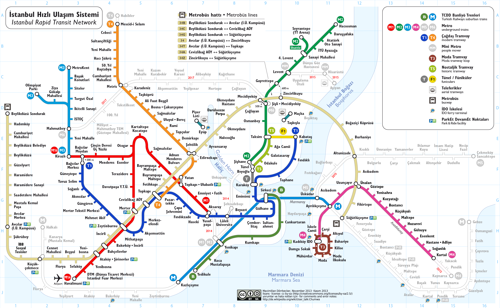

Marmaray Canlı Takip Panosu
Tüm duraklar için anlık tren kalkış saatleri ve güzergah durumu. Durak seçerek Halkalı ve Gebze yönü saatlerini görün.
CANLI
REKLAM ALANI (BU ALANA REKLAM VEREBİLİRSİNİZ.)


--.--.---- --:--:--
İSTEDİĞİNİZ TRENE TIKLAYINIZ
İstasyon
← Halkalı: -- dk
Gebze: -- dk →
Marmaray Güzergah Hattı
İstanbul Hızlı Ulaşım Sistemi

REKLAM ALANI (BU ALANA REKLAM VEREBİLİRSİNİZ.)